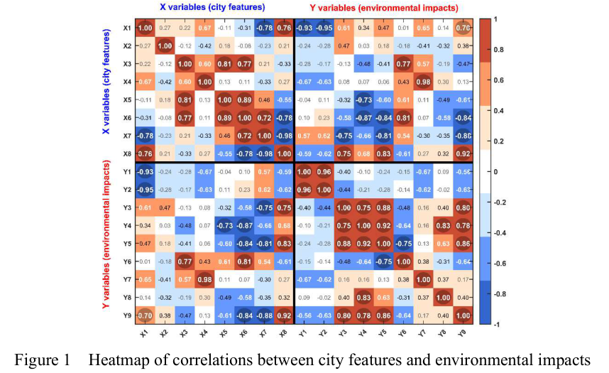
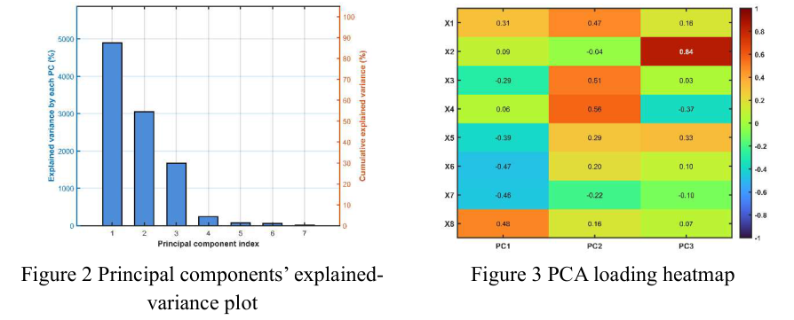
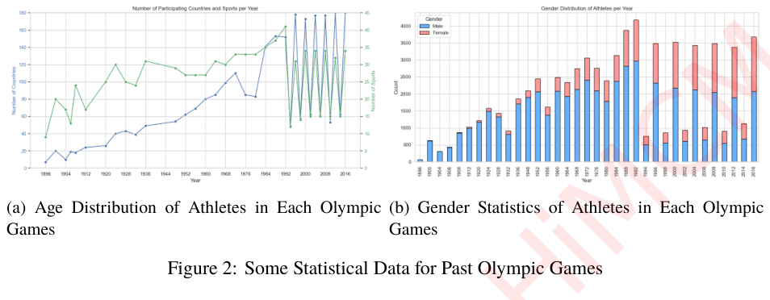
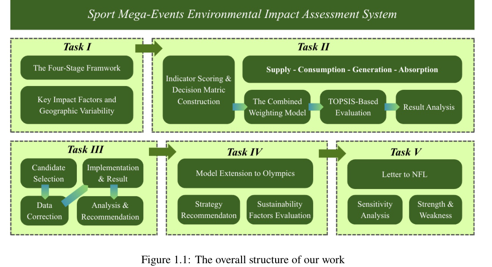
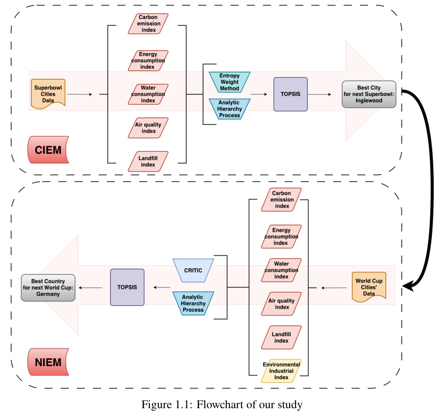
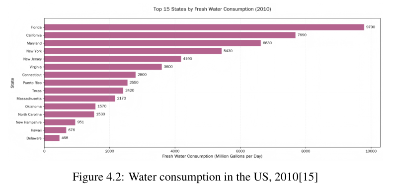
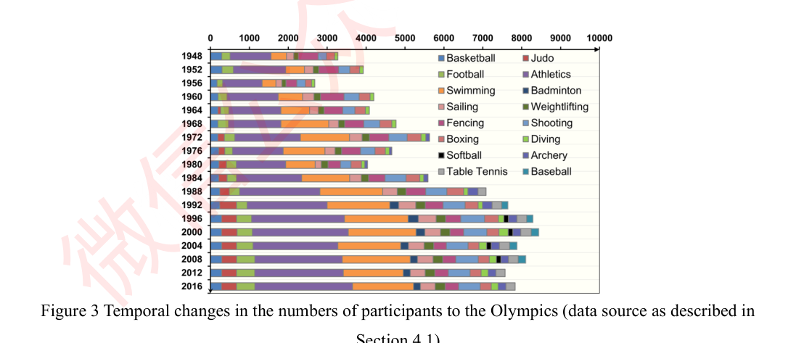
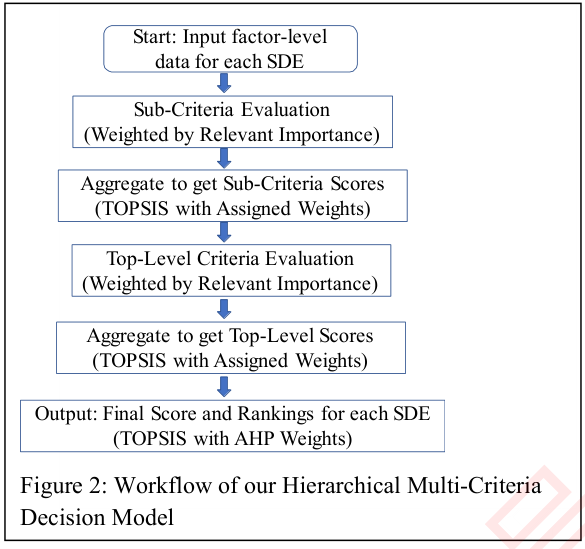

8份具体图形摘录；保留出处、原图内容和水印。获奖不等于每张图都值得模仿，下面仅提取适用的排版原则。
全部68篇候选图页图库2025 / Team 16739 / PDF 第8页

我们的指标矩阵使用单向色标；相关矩阵才使用以零为中心的双色标。
2025 / Team 16739 / PDF 第8页

把同一问题的两个侧面并列，避免把不同尺度画在一条轴上。
2024 / Team 14995 / PDF 第6页

可借鉴多面板结构与统一字体；不照搬原图的双轴。
2025 / Team 16738 / PDF 第4页

借鉴任务分组，改为低饱和配色，减少装饰。
2025 / Team 16442 / PDF 第4页

让箭头表达先后关系，框中文字短而具体。
2025 / Team 16442 / PDF 第9页

本题25城适合横排；用点和区间呈现不确定性。
2024 / Team 15504 / PDF 第7页

适合类别少的构成比较；本题不同代理不直接堆叠为总量。
2024 / Team 15041 / PDF 第11页

黑白打印仍可辨识，适合模型步骤和公式链。